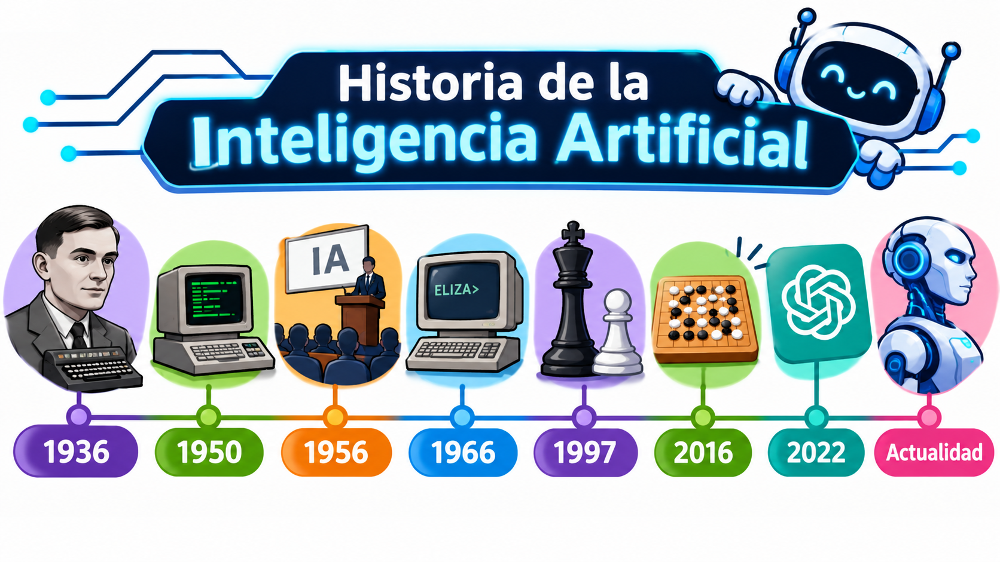

| TIPO | FUNCIÓN | EJEMPLO |
| IA estrecha o débil (ANI) | Realiza tareas específicas. | Siri, ChatGPT, traductores |
| IA general (AGI) | Podría realizar cualquier tarea intelectual humana. | Aún no existe. |
| Superinteligencia artificial (ASI) | Superaría la inteligencia humana en prácticamente todos los ámbitos. | Es hipotética. |
La inteligencia artificial (IA) es una tecnología que permite a las máquinas realizar tareas que normalmente necesitan inteligencia humana, como aprender, resolver problemas, reconocer imágenes y comunicarse. Sus orígenes se remontan a mediados del siglo XX, cuando los científicos comenzaron a investigar si los ordenadores podían imitar el pensamiento humano.
En 1950, el matemático Alan Turing planteó la posibilidad de que las máquinas pudieran pensar. Más tarde, en 1956, se utilizó por primera vez el término «inteligencia artificial» durante una conferencia en Estados Unidos. A partir de ese momento, comenzaron a desarrollarse programas capaces de resolver problemas y mantener conversaciones sencillas.
Con el paso de los años, la inteligencia artificial fue mejorando gracias a los avances tecnológicos y al desarrollo de ordenadores más potentes. En 1997, la computadora Deep Blue consiguió derrotar al campeón mundial de ajedrez Garry Kasparov. En 2016, otro gran avance tuvo lugar cuando AlphaGo venció a uno de los mejores jugadores del mundo de Go.
En noviembre de 2022 se lanzó ChatGPT, que permitió que millones de personas pudieran utilizar la inteligencia artificial de una forma sencilla. Actualmente, esta tecnología es capaz de crear textos, imágenes y vídeos, traducir idiomas y ayudar en diferentes tareas. Además, se utiliza en campos como la educación, la medicina, la ciencia y el transporte.
En conclusión, la inteligencia artificial ha evolucionado mucho desde sus comienzos y se
ha convertido en una de las tecnologías más importantes de la actualidad. Su desarrollo
continúa avanzando y seguirá teniendo una gran influencia en nuestra vida cotidiana y
en el futuro de la sociedad.
Vídeo
